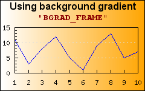
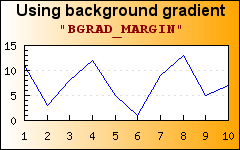
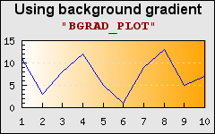

A color gradient background will change the color from a start color to a finish color in even steps (the number of steps depends on the size of the graph). The direction of the gradient is controlled by specifying a style parameter for the gradient. The signature for the gradient background method is
Graph::SetBackgroundGradient($aFrom='navy',$aTo='silver',$aGradType=2,$aStyle=BGRAD_FRAME)
The last style par mater specified where in the graph the gradient style should be applied and the different options are
BGRAD_FRAME, The entire graph frame will be filled
BGRAD_MARGIN, Only the margin area (the graph area
outside the plot area) will be filled
GRAD_PLOT, Only the plot area will be filled
This is illustrated in Figure 14.93. What area of the graph the gradient should affect
Figure 14.93. What area of the graph the gradient should affect
|

|

|

|
The different types of gradient fills are shown in Figure 14.94. Different types of gradient fills where the gradient from color is
"white" and the to color is "orange"
A drawback of using gradient backgrounds is that they are processing intensive
and since they are generated each time the graph is generated it can take
substantive amount of time for large graphs. To help with this the library
offers a small (very simple) utility that can be tun to create gradient images
off line. These images can later on be used as (static) background images. In
the distribution there is a small utility in the
"Examples/" directory called
"mkgrad.php". Pointing the browser to this script will
show a basic form as shown in Figure 14.95. The "mkgrad" utiliy to create gradient images. The script will
allow the creation of a gradient images using any of the predefined colors and
gradient types.